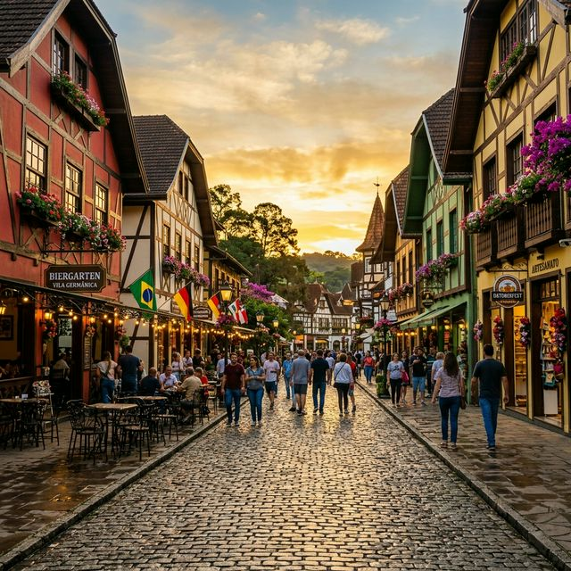

Se você pensa em investir em Airbnb em Blumenau, saiba que está diante de uma das cidades mais sólidas de Santa Catarina quando o assunto é aluguel de temporada. Diferente do litoral, onde a sazonalidade é agressiva, Blumenau respira economia e eventos durante os 12 meses do ano.
Vila Germânica e o Gigante de Outubro
A Oktoberfest Blumenau é o momento em que a cidade literalmente transborda. Durante este período, as diárias podem quadruplicar e a antecedência de reserva costuma ser de 6 a 10 meses. Se o seu imóvel está em bairros como Velha ou Centro, seu potencial de lucro é massivo.
Dica de Superhost: Ofereça detalhes que remetam à cultura alemã. Um guia impresso com as melhores cervejarias artesanais locais ou dicas de como chegar à Vila Germânica pode garantir avaliações perfeitas.
Além das Canecas: O Turismo de Negócios
O que muitos anfitriões iniciantes ignoram em Blumenau é o seu gigante polo têxtil e de tecnologia. Durante a semana, executivos e representantes comerciais lotam a cidade. Isso permite uma estratégia de precificação híbrida: diárias corporativas durante a semana e pacotes românticos/turísticos de fim de semana para o Vale Europeu.
Checklist do Imóvel para Blumenau
- Internet de Alta Velocidade: Essencial para o público de negócios e nômades digitais.
- Ar-Condicionado: O verão no Vale é um dos mais quentes de Santa Catarina; o conforto térmico é inegociável.
- Ambiente Work-friendly: Uma pequena mesa de trabalho e iluminação adequada aumentam sua conversão em períodos de baixa temporada.
O Encanto do Vale Europeu
Blumenau é o portão de entrada para cidades menores mas igualmente fascinantes, como Pomerode e Timbó. Anfitriões que criam parcerias com essas regiões para roteiros do "Vale Europeu" conseguem estender a permanência média dos hóspedes, reduzindo o custo de rotatividade (limpezas).
Sua gestão em Blumenau precisa ser profissional?
Nossos especialistas ajudam você a configurar um calendário inteligente para não deixar dinheiro na mesa durante os grandes eventos.
Consultar Gestão Especializada